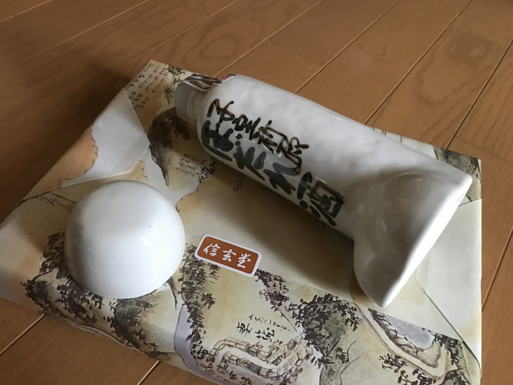
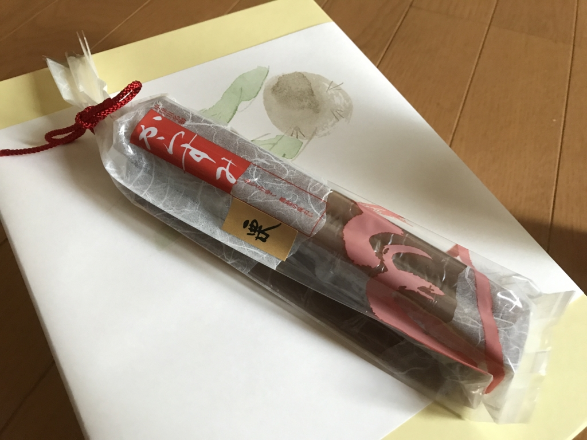

お誕生日プレゼント、ありがとうございます！
公開日：

GW 前進行ですごく忙しかった ＆ 次々と送られてくるので（クロネコのヒト、呆れてたんじゃないかな！）、なかなかお礼が書けなかったのですが……いろいろいただきありがといございました！
ひわいなおさけ

ひとつめは、ち○このカタチをした日本酒です。家内安全・子孫繁栄にご利益がありそうで、絶滅危惧種のだるやなぎにはピッタリと言えます。一口飲んでみましたが、味もそこそこというか、割とおいしいというか、つい二口目飲んじゃうぐらい美味しいです（← 飲んだのかよ！）。
からすみ

Twitter で「カラスミって食ったことあるはずだけどどんなのか覚えてない」などと呟いていたせいか、カラスミもいただきました。ただし、ひらがなの“からすみ”でした。コレジャナイ！！
味は……独特な感じの羊羹？ 甘さ控えめ。岐阜の名物だそうで、そういえば、ちょこっとだけ“ういろう”感がある気もします。
本
")
英語史で解きほぐす英語の誤解―納得して英語を学ぶために (125ライブラリー)
- 作者: 堀田隆一
- 出版社/メーカー: 中央大学出版部
- 発売日: 2011/10
- メディア: 単行本
- 購入: 2人 クリック: 22回
- この商品を含むブログを見る
")
代議制民主主義 - 「民意」と「政治家」を問い直す (中公新書)
- 作者: 待鳥聡史
- 出版社/メーカー: 中央公論新社
- 発売日: 2015/11/21
- メディア: 新書
- この商品を含むブログ (20件) を見る
あと、本を2冊いただきました。英語史の本はさっそく読了しちゃったのですが、結構面白い……っていうか、なんで高校の英語の時間でこれを教えてくれないんだって感じ。
代議制の本は何冊か積んであるのですが、早く読めってことですよね、わかります(｀･ω･´)ゞ
この前の救援物資ともども、いろいろありがとうございました。十分なお返しもできていないのに、恐縮至極です。